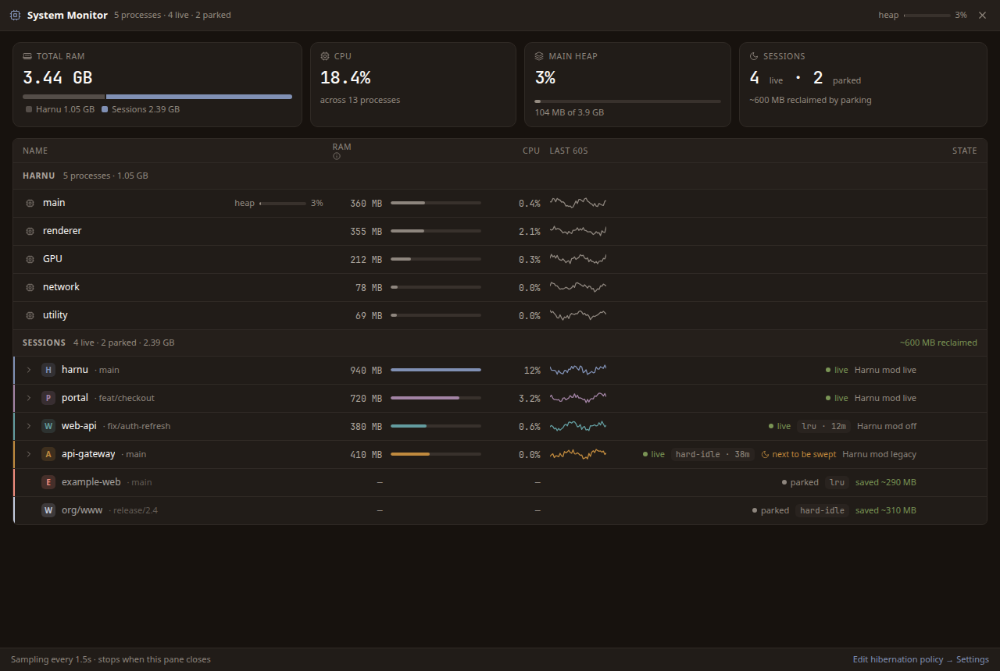
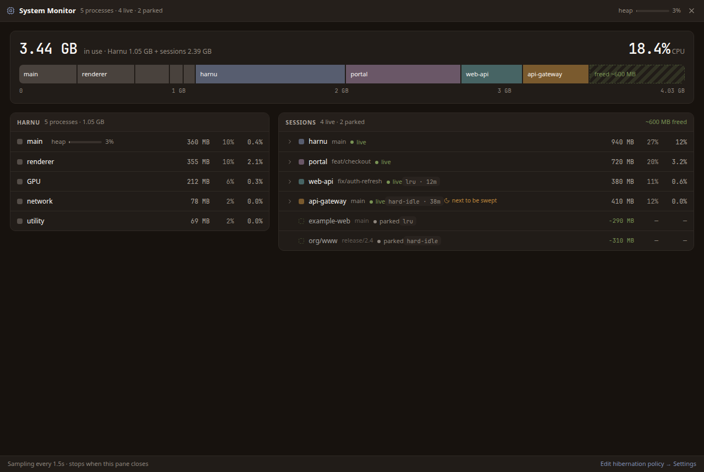
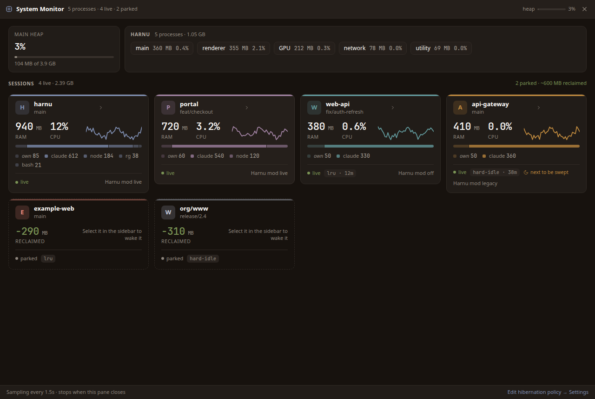
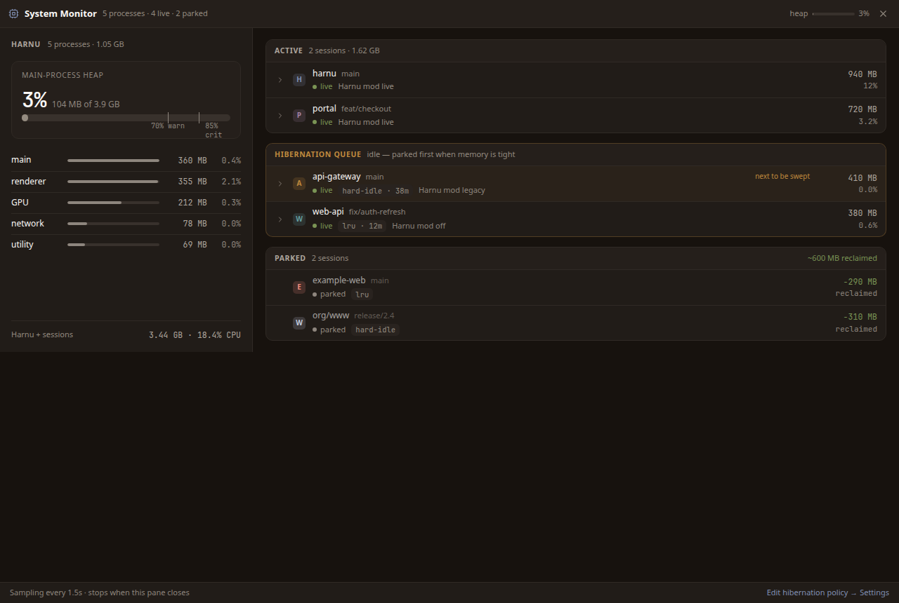
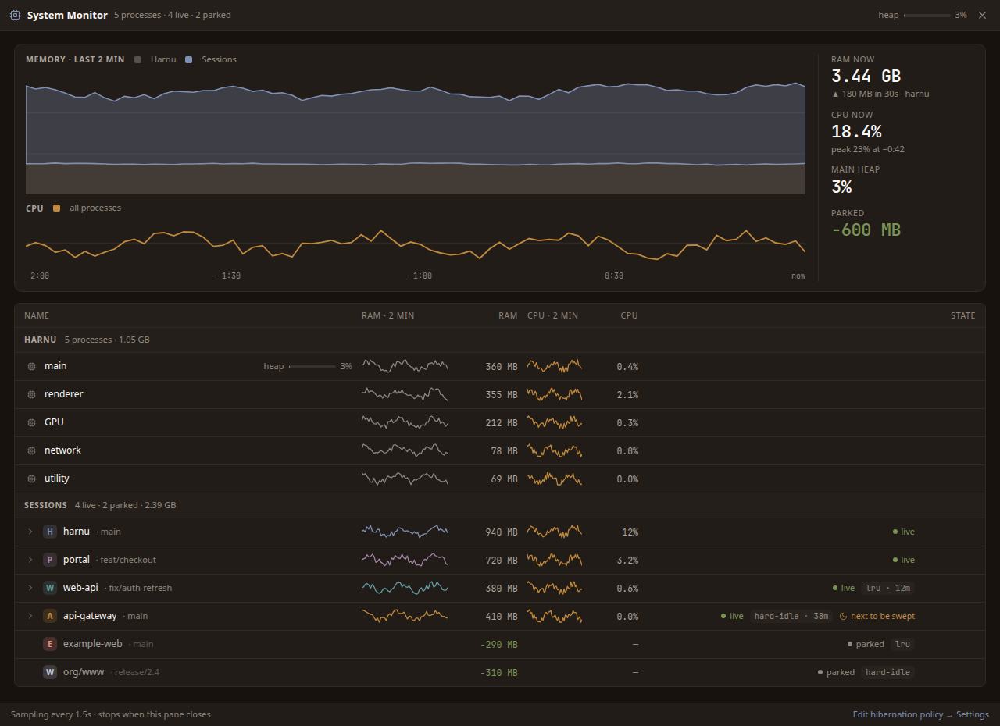
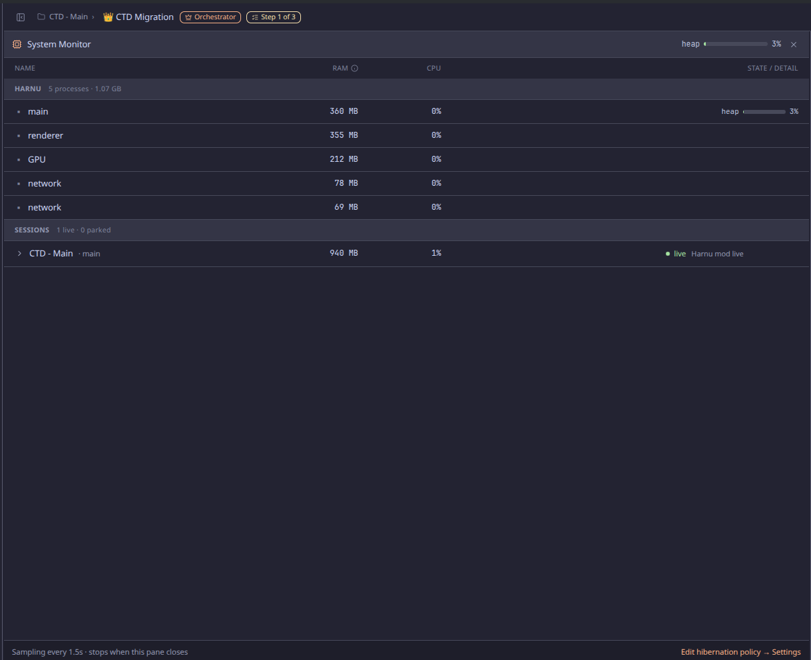

Context and decisions
Today the System Monitor is a flat table: name, RAM, CPU and state, with a lot of empty
space and nothing that shows proportion, trend or what the hibernation policy is about
to do. Below are 5 directions for the same screen, all with the same sample data and the
app's tokens. Pick one (or ask for a mix) and I will carry on with it.
Everything shown already comes from the current sampler: RSS and CPU per process, the
main heap, live/parked sessions with child processes, the hibernation reason, the sweep
rank and the reclaimed RAM. The only exception is E, which needs to
keep the last ~80 samples in the renderer to draw its charts (without sampling any more
often). The sparklines in A and C use the same buffer.
States in every variant: default, expandido (the harnu session
opened onto its processes), hover (the portal row's actions visible) and
heap-alerta (main heap at 78%).
Approved on 2026-10-30: F · Combinada. Round 1 (A–E) stays below as a
capture only, for reference — F combines D's sidebar, A's KPIs and table, and C's cards.
Round 1:





